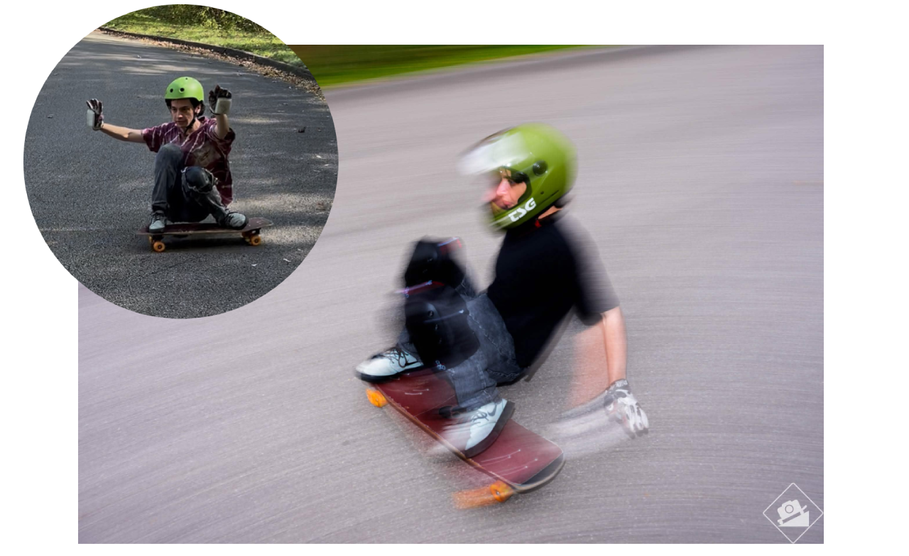
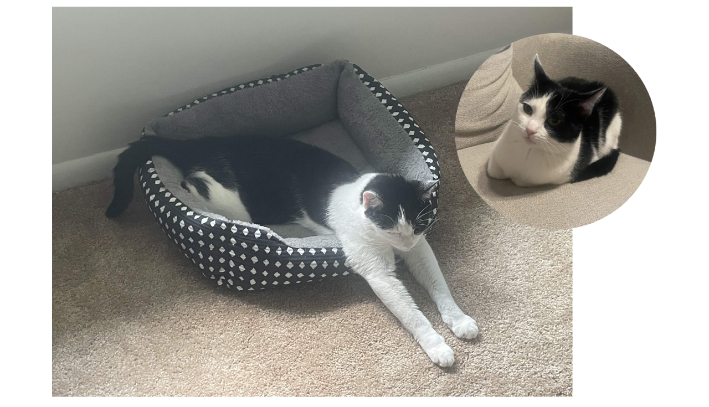

I majored in UX design at Purdue University, but I also studied psychology and communications with a focus on mass media. Since earning my Bachelor's degree, I've been working as a UX Analyst at Epic Games, conducting research studies that were key in understanding assumptions and mental models of early versions of the Sprite Extraction system that debuted in Chapter 7, Season 3: Runners and remains part of the game today.
I love video games and other forms of art that transcends being something you process into something you directly experience, which was why I was drawn to UX as an industry in the first place. I think that we as people all have important stories to share, and art and other immersive experiences, like video games, can be a powerful medium for helping us understand each others' experiences. My favorite games currently are Death Stranding and Control.


While building my design skills, I fell in love with the "human" aspect of human-computer interaction. I want to understand how technology affects us and in turn, we influence technology. This interest expanded into a specialization more directed into UX Research which landed me my current role. In summary, I think technology can be cool, but people are even cooler!
I'm also very passionate about independent journalism and the power of people to share knowledge amongst one-another. During school, I wrote an article for Purdue's student-run newspaper, the Exponent, that you can read here. I also served as the Public Relations Director for the Purdue Longboarding Club for 2 years (2023-2025) in which I managed the club's Instagram and created the club's YouTube channel.
Which leads into one of my hobbies; I downhill skate. Skating is very important to me in building trust in myself and learning how to learn from mistakes. My favorite spots I've been to for skate trips are Port Jervis, Asheville and the Mississippi Palisades.
I also love to read. My favorite book is Slaughterhouse Five with Martyr! as a close second. I'm currently reading Inherent Vice by Thomas Pynchon.